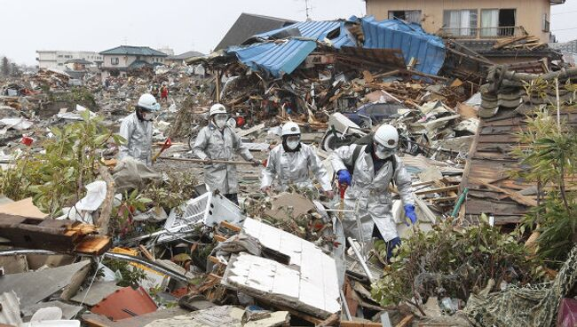
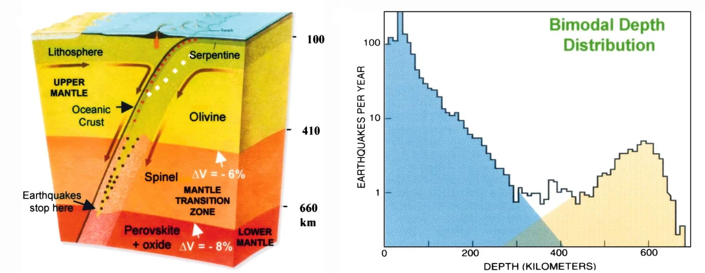

ЗЕМЛЕТРЯСЕНИЕ – это подземные толчки и колебания земной поверхности, возникающие в результате внезапных смещений и разрывов в земной коре или верхней мантии и передающиеся на большие расстояния в виде упругих колебаний.
Топ 3 факта про землетрясения
1:Архитектурные строения инков были невероятно устойчивы к сейсмической активности. Каменная кладка, которую использовали инки, могла выдержать самое крупное землетрясение.
Факт 2
В 2011 году, после землетрясения в Японии, Земля начала вращаться быстрее, а сутки стали короче на 2 секунды. К 2015 году скорость вращения вернулась к норме.

Факт 3
Глубинные землетрясения могут происходить на глубинах от 300 до 700 км. Обычно они не вызывают серьезного ущерба из-за большой удаленности от поверхности Земли.

Самое смертельное землетрясение
Землетрясение в 1201 году в восточной части Средиземноморья стало самым смертоносным в истории, в результате которого погибло больше 1 миллиона человек.
3 самых разрушительных землетрясения
1.Самым серьезным землетрясением в истории человечества считается серия подземных толчков, произошедших у берегов Японии 11 мая 2011 года. Самый сильный из них, магнитудой 9, зарегистрированный на глубине 30 км в 72 км от побережья архипелага, продолжался около 6 минут и вызвал цунами высотой более 40 метров.
2.Второе по масштабам разрушения землетрясение также произошло в Японии, находящейся в одном из наиболее сейсмоопасных регионов мира. Рано утром 17 января 1995 г. в в окрестностях города Кобе на юге страны был зарегистрирован подземный толчок магнитудой 6,9. Сравнительно небольшая глубина эпицентра — всего 16 км - стала причиной значительных разрушений
3.Третье по разрушительности землетрясение также случилось в Азиатско-Тихоокеанском регионе — в Китае. В ночь на 12 мая 2008 г. подземный толчок магнитудой 8 произошел в центральной провинции Сычуань на глубине 19 километров

.jpg)